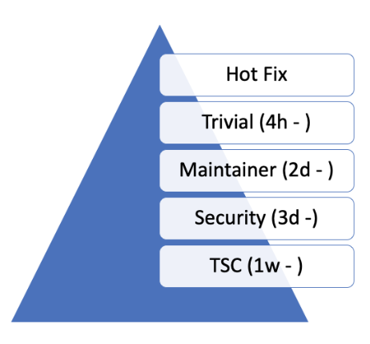

Development Environment and Tools
Code Review
GitHub is intended to provide a framework for reviewing every commit before it is accepted into the code base. Changes, in the form of Pull Requests (PR) are uploaded to GitHub but don’t actually become a part of the project until they’ve been reviewed, passed a series of checks (CI), and are approved by maintainers. GitHub is used to support the standard open source practice of submitting patches, which are then reviewed by the project members before being applied to the code base.
Pull requests should be appropriately labeled, and linked to any relevant bug or feature tracking issues .
The Zephyr project uses GitHub for code reviews and Git tree management. When submitting a change or an enhancement to any Zephyr component, a developer should use GitHub. GitHub Actions automatically assigns a responsible reviewer on a component basis, as defined in the MAINTAINERS.yml file stored with the code tree in the Zephyr project repository. A limited set of release managers are allowed to merge a pull request into the main branch once reviews are complete.
Give reviewers time to review before code merge
The Zephyr project is a global project that is not tied to a certain geography or timezone. We have developers and contributors from across the globe. When changes are proposed using pull request, we need to allow for a minimal review time to give developers and contributors the opportunity to review and comment on changes. There are different categories of changes and we know that some changes do require reviews by subject matter experts and owners of the subsystem being changed. Many changes fall under the “trivial” category that can be addressed with general reviews and do not need to be queued for a maintainer or code-owner review. Additionally, some changes might require further discussions and a decision by the TSC or the Security working group. To summarize the above, the diagram below proposes minimal review times for each category:

Pull request classes
Workflow
An author of a change can suggest in his pull-request which category a change should belong to. A project maintainers or TSC member monitoring the inflow of changes can change the label of a pull request by adding a comment justifying why a change should belong to another category.
The project will use the label system to categorize the pull requests.
Changes should not be merged before the minimal time has expired.
Categories/Labels
- Hotfix
Any change that is a fix to an issue that blocks developers from doing their daily work, for example CI breakage, Test breakage, Minor documentation fixes that impact the user experience.
Such fixes can be merged at any time after they have passed CI checks. Depending on the fix, severity, and availability of someone to review them (other than the author) they can be merged with justification without review by one of the project owners.
- Trivial
Trivial changes are those that appear obvious enough and do not require maintainer or code-owner involvement. Such changes should not change the logic or the design of a subsystem or component. For example a trivial change can be:
Documentation changes
Configuration changes
Minor Build System tweaks
Minor optimization to code logic without changing the logic
Test changes and fixes
Sample modifications to support additional configuration or boards etc.
- Maintainer
Any changes that touch the logic or the original design of a subsystem or component will need to be reviewed by the code owner or the designated subsystem maintainer. If the code changes is initiated by a contributor or developer other than the owner the pull request needs to be assigned to the code owner who will have to drive the pull request to a mergeable state by giving feedback to the author and asking for more reviews from other developers.
- Security
Changes that appear to have an impact to the overall security of the system need to be reviewed by a security expert from the security working group.
- TSC and Working Groups
Changes that introduce new features or functionality or change the way the overall system works need to be reviewed by the TSC or the responsible Working Group. For example for breaking API changes, the proposal needs to be presented in the Architecture meeting so that the relevant stakeholders are made aware of the change.
A Pull-Request should have an Assignee
An assignee to a pull request should not be the same as the author of the pull-request
An assignee to a pull request is responsible for driving the pull request to a mergeable state
An assignee is responsible for dismissing stale reviews and seeking reviews from additional developers and contributors
Pull requests should not be merged without an approval by the assignee.
Reviewers shall not ‘Request Changes’ without comments or justification
Any change requests (-1) on a pull request have to be justified. A reviewer should avoid blocking a pull-request with no justification. If a reviewer feels that a change should not be merged without their review, then: Request change of the category: for example:
Trivial -> Maintainer
Assign Pull Request to yourself, this will mean that a pull request should not be merged without your approval.
Pull Requests should have at least 2 approvals before they are merged
A pull-request shall be merged only with two positive reviews (approval). Beside the person merging the pull-request (merging != approval), two additional approvals are required to be able to merge a pull request. The person merging the request can merge without approving or approve and merge to get to the 2 approvals required.
Reviewers should keep track of pull requests they have provided feedback to
If a reviewer has requested changes in a pull request, he or she should monitor the state of the pull request and/or respond to mention requests to see if his feedback has been addressed. Failing to do so, negative reviews shall be dismissed by the assignee or an owner of the repository. Reviews will be dismissed following the criteria below:
The feedback or concerns were visibly addressed by the author
The reviewer did not revisit the pull request after 2 week and multiple pings by the author
The review is unrelated to the code change or asking for unjustified structural changes such as:
Split the PR
Can you fix this unrelated code that happens to appear in the diff
Can you fix unrelated issues
Etc.
Closing Stale Issues and Pull Requests
The Pull requests and issues sections on Github are NOT discussion forums. They are items that we need to execute and drive to closure. Use the mailing lists for discussions.
In case of both issues and pull-requests the original poster needs to respond to questions and provide clarifications regarding the issue or the change. After one week without a response to a request, a second attempt to elicit a response from the contributor will be made. After one more week without a response the item may be closed (draft and DNM tagged pull requests are excluded).
Continuous Integration
All changes submitted to GitHub are subject to tests that are run on emulated platforms and architectures to identify breakage and regressions that can be immediately identified. Testing using Twister additionally performs build tests of all boards and platforms. Documentation changes are also verified through review and build testing to verify doc generation will be successful.
Any failures found during the CI test run will result in a negative review assigned automatically by the CI system. Developers are expected to fix issues and rework their patches and submit again.
The CI infrastructure currently runs the following tests:
Run
checkpatchfor code style issues (can vote -1 on errors; see note)Gitlint: Git commit style based on project requirements
License Check: Check for conflicting licenses
Run
twisterscriptRun kernel tests in QEMU (can vote -1 on errors)
Build various samples for different boards (can vote -1 on errors)
Verify documentation builds correctly.
Note
checkpatch is a Perl script that uses regular expressions to
extract information that requires a C language parser to process
accurately. As such it sometimes issues false positives. Known
cases include constructs like:
static uint8_t __aligned(PAGE_SIZE) page_pool[PAGE_SIZE * POOL_PAGES]; IOPCTL_Type *base = config->base;
Both lines produce a diagnostic regarding spaces around the *
operator: the first is misidentified as a pointer type declaration
that would be correct as PAGE_SIZE *POOL_PAGES while the second
is misidentified as a multiplication expression that would be correct
as IOPCTL_Type * base.
Maintainers can override the -1 in cases where the CI infrastructure gets the wrong answer.
Labeling issues and pull requests in GitHub
The project uses GitHub issues and pull requests (PRs) to track and manage daily and long-term work and contributions to the Zephyr project. We use GitHub labels to classify and organize these issues and PRs by area, type, priority, and more, making it easier to find and report on relevant items.
All GitHub issues or pull requests must be appropriately labeled. Issues and PRs often have multiple labels assigned, to help classify them in the different available categories. When reviewing a PR, if it has missing or incorrect labels, maintainers shall fix it.
This saves us all time when searching, reduces the chances of the PR or issue being forgotten, speeds up reviewing, avoids duplicate issue reports, etc.
These are the labels we currently have, grouped by applicability:
Labels applicable to issues only
Label |
Description |
|---|---|
priority: {high|medium|low} |
To classify the impact and importance of a bug or feature. Note: Issue priorities are generally set or changed during the bug-triage or TSC meetings. |
Regression |
Something, which was working, but does not anymore (bug subtype). |
Enhancement |
Changes/Updates/Additions to existing features. |
Feature request |
A request for a new feature. |
Feature |
A planned feature with a milestone. |
Hardware Support |
Covers porting an existing feature (including Zephyr itself) to new hardware. |
Duplicate |
This issue is a duplicate of another issue (please specify). |
Good first issue |
Good for a first time contributor to take. |
Release Notes |
Issues that need to be mentioned in release notes as known issues with additional information. |
Any issue must be classified and labeled as either Bug, Enhancement, RFC, Feature, Feature Request or Hardware Support. More information on how feature requests are handled and become features can be found in Feature Tracking.
Labels applicable to pull requests only
The issue or PR describes a change to a stable API.
Label |
Description |
|---|---|
Hotfix |
Fix for an issue blocking development. |
Trivial |
Simple changes that can have shorter review time and be reviewed by anyone, i.e. typos, straightforward one-liner bug fixes, etc. |
Maintainer |
Maintainer review required. |
Security Review |
To be reviewed by a security expert. |
DNM |
This PR should not be merged (Do Not Merge). For work in progress, GitHub “draft” PRs are preferred. |
Needs review |
The PR needs attention from the maintainers. |
Backport |
The PR is a backport or should be backported. |
Licensing |
The PR has licensing issues which require a licensing expert to review it. |
Note
For all labels applicable to PRs: Please note that the label, together with PR complexity, affects how long a merge should be held to ensure proper review. See review process for details.
Labels applicable to both pull requests and issues
Label |
Description |
|---|---|
area: {area-name} |
Indicates Zephyr subsystems (e.g, area: Kernel, area: I2C, area: Memory Management), project functions (e.g., area: Debugging, area: Documentation, area: Process), or other categories (e.g., area: Coding Style, area: MISRA-C) affected by the bug or the pull request. An area maintainer should be able to filter by an area label and find all issues and PRs which relate to that area. |
platform: {platform-name} |
An issue or PR which affects only a particular platform. |
dev-review |
The issue is to be discussed in the following dev-review if time permits. |
TSC |
TSC stands for Technical Steering Committee. The issue is to be discussed in the following TSC meeting if time permits. |
Breaking API Change |
The issue or PR describes a breaking change to a stable API. See additional information in Introducing breaking API changes. |
bug |
The issue is a bug, or the PR is fixing a bug. |
Coverity |
A Coverity detected issue or its fix. |
Waiting for response |
The Zephyr developers are waiting for the submitter to respond to a question, or address an issue. |
Blocked |
Blocked by another PR or issue. |
Stale |
An issue or a PR which seems abandoned, and requires attention by the author. |
In progress |
For PRs: is work in progress and should not be merged yet. For issues: Is being worked on. |
RFC |
The author would like input from the community. For a PR it should be considered a draft. |
LTS |
Long term release branch related. |
EXT |
Related to an external component. |